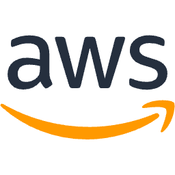

💻 기술 스택
-

-

-

- 
사용자 맞춤형 여행지를 추천하는 API 서버를 개발했습니다. Spring Boot를 기반으로 RESTful API를 설계하고, MySQL을 사용하여 여행지 데이터를 효율적으로 관리했습니다.
사용자 간 재능을 교환하고 거래할 수 있는 플랫폼의 백엔드 시스템을 구축했습니다. 실시간 채팅 기능을 구현하고, 안전한 거래를 위한 인증 및 권한 관리 로직을 설계했습니다.
안정적이고 확장성 있는 서비스 운영을 위해 AWS 클라우드 환경에 인프라를 구축했습니다. EC2, RDS, S3 등 주요 서비스를 활용하여 애플리케이션을 배포하고 모니터링했습니다.